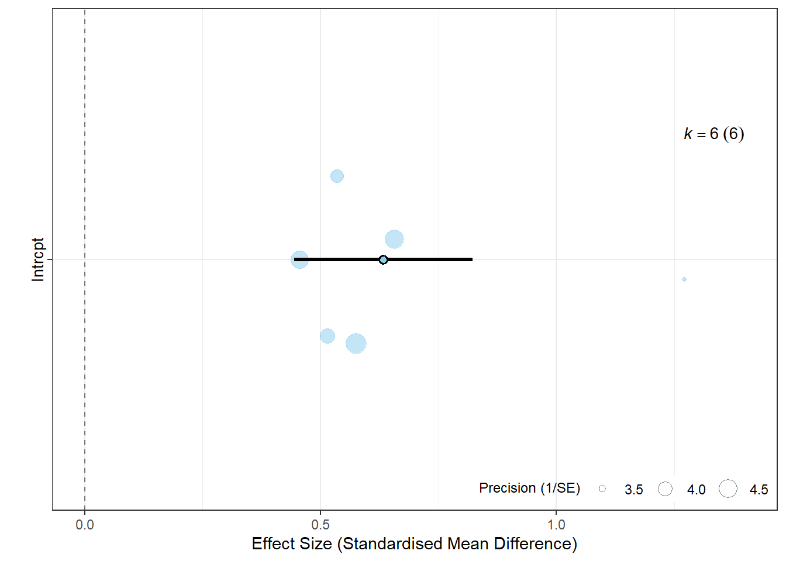
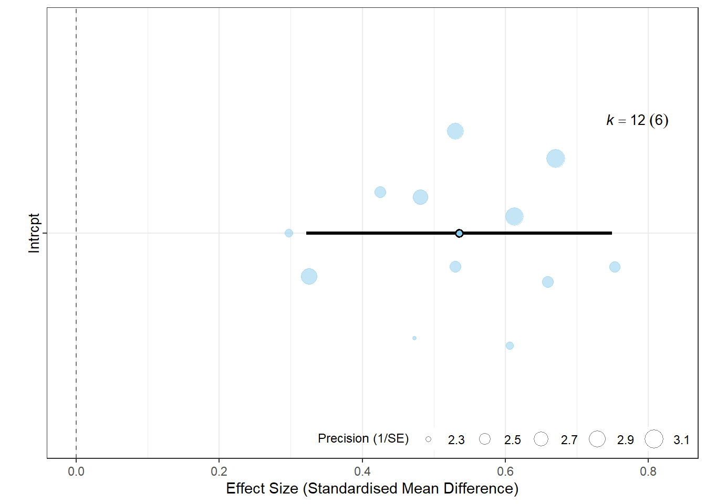

This exercise introduces meta-analysis concepts and methods, focusing on how they apply to ecological data. You will work with R to calculate effect sizes, understand fixed and random effects models, explore multi-level meta-analysis, and visualise results.
1. Effect Sizes
Objective: Learn about effect sizes and how to compute them for ecological studies
Effect sizes are key to synthesising study results in meta-analysis, as they provide a standardised way of comparing findings across studies. Common effect sizes include the standardised mean difference (Hedges’ g in ecology), correlation coefficient, and log-transformed response ratio (lnRR).
Example Code:
We have data from six fictional studies that examined species abundance before and after restoration efforts. The dataset includes: - Sample sizes before and after restoration (n1 and n2). - Mean species abundance before and after (m1 and m2). - Standard deviations of abundance before and after (sd1 and sd2).
Study
Sample Size (Before)
Sample Size (After)
Mean Abundance (Before)
Mean Abundance (After)
SD (Before)
SD (After)
Smith_2015
30
28
5.2
3.9
1.1
0.9
Johnson_2017
50
48
6.1
5.4
1.3
1.1
Lee_2018
45
44
5.9
5.3
1.0
0.8
Gomez_2016
32
30
4.8
4.2
1.2
1.0
Patel_2019
40
39
5.5
4.9
1.4
1.2
Chen_2020
35
33
5.1
4.5
1.2
1.1
The standardised mean difference (SMD) between restored and control sites is calculated as follows:
\[\text{SMD} = \frac{\text{mean}_{\text{restored}} - \text{mean}_{\text{control}}}{\text{pooled standard deviation}}\] Where the pooled standard deviation is calculated as:
In ecology we often have small sample sizes, so we use Hedges g to “correct” for small samples. The R package metafor calculates this for us using the escalc function.
# Install metafor if you need to# install.packages("metafor")# Load metaforlibrary(metafor)# Example dataset of ecological studies with mean outcomes and standard deviationsdata <-data.frame(study =c("Smith_2015", "Johnson_2017", "Lee_2018", "Gomez_2016", "Patel_2019", "Chen_2020"),n1 =c(30, 50, 45, 32, 40, 35),n2 =c(28, 48, 44, 30, 39, 33),m1 =c(5.2, 6.1, 5.9, 4.8, 5.5, 5.1),m2 =c(3.9, 5.4, 5.3, 4.2, 4.9, 4.5),sd1 =c(1.1, 1.3, 1.0, 1.2, 1.4, 1.2),sd2 =c(0.9, 1.1, 0.8, 1.0, 1.2, 1.1))# Calculate standardised mean differencesdata$yi <-escalc(measure="SMD", m1i=m1, sd1i=sd1, n1i=n1, m2i=m2, sd2i=sd2, n2i=n2, data=data)$yidata$vi <-escalc(measure="SMD", m1i=m1, sd1i=sd1, n1i=n1, m2i=m2, sd2i=sd2, n2i=n2, data=data)$vidata
Objective: Understand and compare fixed-effect and random-effects models
In a fixed-effect model, we assume that all studies estimate the same true effect. In contrast, a random-effects model assumes that each study estimates its own effect size, accounting for between-study variability.
Fit both models and compare results.
# Fixed-effect modelfixed_model <-rma(yi, vi, data = data, method="FE")summary(fixed_model)
# Random-effects modelrandom_model <-rma(yi, vi, data = data, method="REML")summary(random_model)
Random-Effects Model (k = 6; tau^2 estimator: REML)
logLik deviance AIC BIC AICc
-0.4504 0.9008 4.9008 4.1197 10.9008
tau^2 (estimated amount of total heterogeneity): 0.0000 (SE = 0.0350)
tau (square root of estimated tau^2 value): 0.0010
I^2 (total heterogeneity / total variability): 0.00%
H^2 (total variability / sampling variability): 1.00
Test for Heterogeneity:
Q(df = 5) = 5.9859, p-val = 0.3076
Model Results:
estimate se zval pval ci.lb ci.ub
0.6330 0.0965 6.5574 <.0001 0.4438 0.8222 ***
---
Signif. codes: 0 '***' 0.001 '**' 0.01 '*' 0.05 '.' 0.1 ' ' 1
Discussion
Why might a random-effects model be more suitable for ecological data? What does the presence of between-study variance tell us?
3.Multi-Level Meta-Analysis
Objective: Explore multi-level meta-analysis to handle nested data structures (e.g., multiple effect sizes per study).
Multi-level meta-analysis allows us to account for non-independence in data, such as when studies report multiple effect sizes, or when species are related to each other.
Here we generate a simulated dataset with nested effect sizes and use metafor to fit a multi-level model.
# Simulated nested datasetmulti_data <-data.frame(study =rep(c("Smith_2015", "Johnson_2017", "Lee_2018", "Gomez_2016", "Patel_2019", "Chen_2020"), each =2),effect =rnorm(12, 0.5, 0.2),vi =runif(12, 0.1, 0.2))# Multi-level meta-analysismulti_model <-rma.mv(effect, vi, random =~1| study, data = multi_data)summary(multi_model)
Why might multi-level meta-analysis be relevant for ecology? How does this approach help with dependencies in data?
4.Visualising Meta-Analysis Results
Objective: Learn to create orchard plots to visualise meta-analysis results
Orchard plots provide a clear visualisation of effect sizes and heterogeneity, making it easier to interpret meta-analysis outcomes.
Use orchard_plot() to visualise the results from the random-effects model and multi-level model.
# install the package from GitHub# We need the remotes package first to do this# install.packages("remotes")# remotes::install_github("daniel1noble/orchaRd")# Load library orchaRdlibrary(orchaRd)
Loading the 'orchaRd' package (version 2.0). For an
introduction and vignette to the package please see: https://daniel1noble.github.io/orchaRd/
# Orchard plot for the random-effects modelorchard_plot(random_model, xlab ="Effect Size (Standardised Mean Difference)",group="study")

# Orchard plot for the multi-level modelorchard_plot(multi_model, xlab ="Effect Size (Standardised Mean Difference)",group="study")

Discussion:
How does the plot help in interpreting effect sizes? What additional insights do you get from visualisations compared to numerical summaries?
When might you choose a fixed-effect model over a random-effects model in ecology?
How can multi-level meta-analysis account for the complexities of ecological data?
What are the benefits and limitations of visualizations in meta-analysis?
5. Cumulative meta-analysis
Objective: Learn to run a cumulative meta-analysis in R
A cumulative meta-analysis examines how the overall effect size estimate changes as each study is added sequentially, usually sorted by publication date. This approach can reveal trends over time, showing whether the effect size has stabilised as more studies are included.
Let’s go through an example of performing a cumulative meta-analysis with the metafor package in R.
Step 1: Create the Dataset
First, we will create a dataset with a year variable to sort studies in chronological order for the cumulative analysis.
Now, we can use the cumul() function from metafor to perform a cumulative meta-analysis. This function recalculates the meta-analysis result each time a new study is added.
# Fit an initial random-effects model random_effect_model <-rma(yi = yi, vi = vi, data = data, method ="REML") # Perform cumulative meta-analysis cumulative_results <-cumul(random_effect_model, order = data$year) # View cumulative meta-analysis cumulative_results
As you add each study (from the earliest to the most recent), you will see how the cumulative estimate of Hedges’ g changes. In ecology, this can highlight if early results were consistent with later studies or if new findings led to significant shifts in the overall effect estimate. This approach provides insight into whether further studies are likely to meaningfully alter the cumulative effect size or if it has stabilised.
Discussion:
Have a look at this paper. What do the results of this study mean for evidence-informed decision making in ecology? What solutions can you think of to mitigate for this issue?